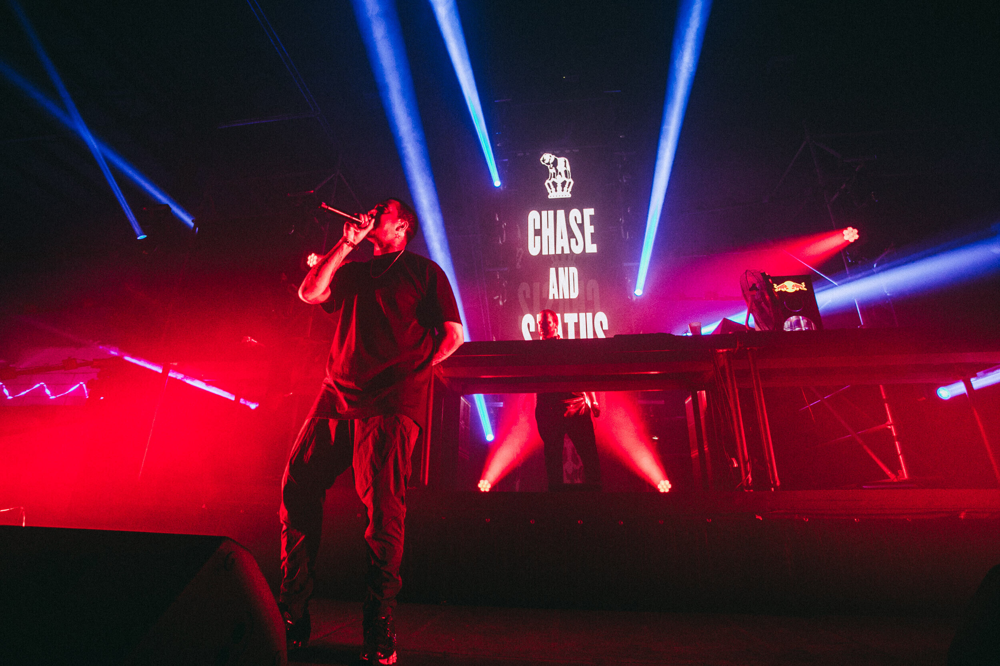
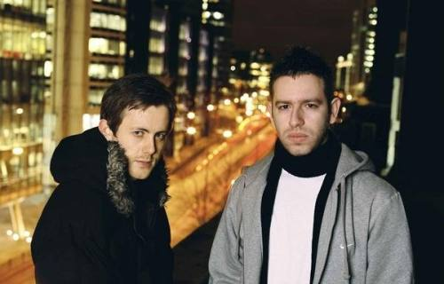

Chase & Status de Inglaterra son uno de los grupos de mayor éxito comercial asociados con el drum'n'bass y el dubstep, con álbumes multiplatino, numerosos sencillos en las listas y trabajos de producción para importantes artistas como Snoop Dogg y Rihanna . Compuesto por los DJ de baile y propietarios de sellos discográficos Saul Milton y Will Kennard y artistas en vivo adicionales, el grupo combina ritmos y técnicas de producción de vanguardia con elementos de rock, pop, reggae, hip-hop y otros estilos, lo que da como resultado pistas enérgicas que encajan para el club y la radio. Originalmente surgieron en 2003 con sencillos en sellos underground como Bingo Beats y Barcode Recordings, el dúo hizo su debut de larga duración con More Than Alot de 2008 , una mezcla muy bien recibida de temas de drum'n'bass y dubstep. Chase & Status luego logró un éxito multiplatino con No More Idols (2011), con muchas colaboraciones, que alcanzó el número dos en la lista de álbumes del Reino Unido. La continuación de 2013, Brand New Machine, alcanzó la misma posición, y Tribe de 2017 , otro largometraje de múltiples géneros con muchos invitados, también se ubicó en el Top Ten. Chase & Status revisó sus raíces ragga-jungle con RTRN II JUNGLE de 2019 . What Came Before , lanzado en 2022, abordó el taladro, el big beat y el R&B del Reino Unido. 2 Ruff, vol. 1 , otro conjunto himno de drum'n'bass, apareció en 2023.

Discografía
More than Alot, 2008
No more idols, 2011
Live At Brixton Academy, 2012
Brand New Machine, 2013
Tribe, 2017
RTRN II JUNGLE, 2019
What Came Before
2 RUFF Vol. 1, 2023

Origen de Chase and Status
Chase & Status es un dúo inglés de música electrónica compuesto por Saul Milton (Chase) y Will Kennard (Status). Además, Andy Gangadeen es el baterista cuando la banda actúa en vivo. MC Rage actuó anteriormente como MC del grupo, pero lo dejó en julio de 2021 para centrarse en proyectos en solitario. El dúo es de Londres y se formó en 2003 después de conocerse en la universidad de Manchester . Desde entonces, el dúo ha lanzado seis álbumes de estudio (además de varios más) y ha colaborado con artistas importantes como Plan B , CeeLo Green , Rihanna , Ejemplo y Tinie Tempah . Dirigen el sello discográfico independiente MTA Records . William Kennard fundó ELAM (East London Arts and Music) en 2014.